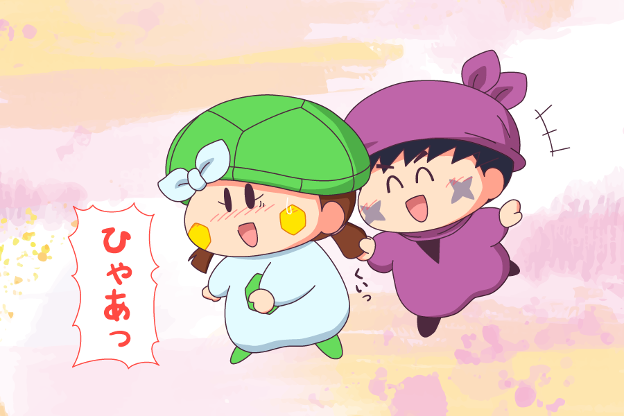

カメリ「ひゃあっ！」
サスケ「オイラ、前からカメリの髪の毛を引っ張ってみたかったんだぜ〜」
カメリ「はわわ・・（ドキドキ）」
サスケ「・・・？
ん？ カメリ、どうしたんだぜ？」
ということで、タイトルの通り、サスケくんにカメリの髪の毛を引っ張っていただきました〜。サスケはちょっとしたいたずらのつもりでしょうけど、カメリにとっては髪の毛とはいえ好意を寄せるサスケくんに触られるのはドキドキもののはず（注：サスカメCPは公式設定ではなく本サイトオリジナル設定です^^;）
二人の恋が進展するところを見てみたい・・けれど、この２人の恋模様はゆっくり進んでほしいなぁとも思ったり。リルムのお節介→ミルモが恋の魔法をかけることで思わぬ展開に進む気もしますが💦
(2021/4/29)